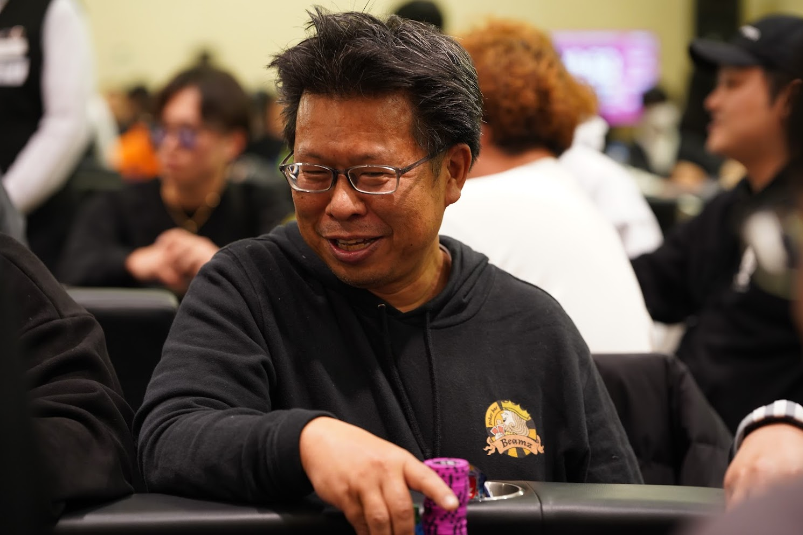

ポーカーと旅をしよう
ポーカーは、ゲームであり、旅でもある。
人と場所をつなぐ体験の記録を、ここに積み上げていく。
Personal Brand by まつ
Scroll
ポーカーは、ゲームであり、旅でもある。
人と場所をつなぐ体験の記録を、ここに積み上げていく。
Poker Trail は、ポーカーを単なる勝負としてではなく、人と場所をつなぐ旅として捉えるプロジェクトです。
山口を起点に、ポーカーシーンの記録と育成を続けながら、プレイヤーと店舗の架け橋となること。そして、ポーカーが長く愛される環境を共に育むことを目的としています。
旅ブログは、その世界観を具体的に見せる記録のひとつです。
ポーカーと旅の記録。体験したこと、感じたことを、ありのままに残す。
ポーカーシーンを支える3つの取り組み。
ポーカールーム経営者向けの情報プラットフォーム。経営ノウハウ、法規制情報、マーケティング戦略など、経営に必要な情報を集約・共有します。
プレイヤー目線とホスト目線の両方を活かした、トーナメントや特別イベントの企画・運営サポート。満足度の高いイベント作りを実現します。
新規開業や既存店舗の改善コンサルティング。集客戦略、コミュニティ形成、リスク管理など、経営者が直面する課題解決をサポートします。
単にプレイするだけでなく、ポーカーシーンの発展と持続可能性に貢献します。
経営者とプレイヤーの相互理解を促進し、より良いポーカー環境の構築をサポートします。
公正なプレイと経営を促進し、長期的に繁栄するポーカーコミュニティを育みます。

ポーカーに興味を持ったのは数年前。戦略性と心理戦の奥深さに魅了され、プレイヤーとしての経験を積んできた。慎重に情報を集め、的確な場面でアクションを起こす「タイトパッシブ」が持ち味。
ポーカーができる場所があるのは、誰かがその環境を支えているから。ただプレイするだけではなく、自分自身もポーカーシーンの一部を支える側になりたいと考えるようになった。
「自分の大事な遊び場は自分で守る」という想いが根底にあり、ポーカールームの経営者とプレイヤーの架け橋となることを目的に POKER TRAIL を立ち上げた。
2023年、XPT広島開催時に情報交換を目的としてオープンチャットを開設したのが始まり。その後「山口ポーカー交流チャット」に名称を変更し、現在も継続中。
POKER TRAIL に関するお問い合わせや、
ポーカールーム経営のご相談はお気軽にどうぞ。